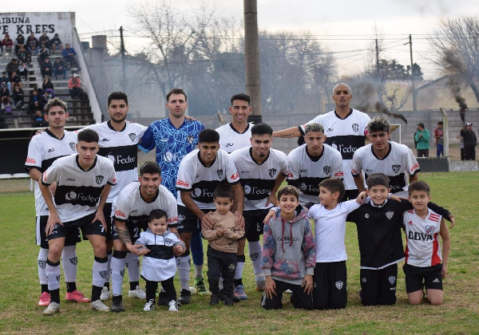
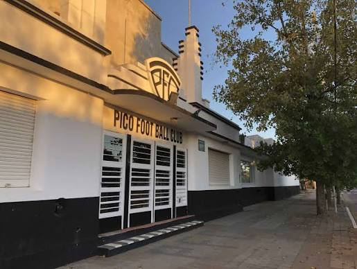

Pico Futbol ClubEl Pico Foot Ball Club es una institución deportiva de General Pico, La Pampa. Es el club más antiguo de la ciudad, por lo que recibe popularmente el apodo de "El Decano". Se destaca fuertemente tanto en el ámbito del fútbol, compitiendo en la Liga Pampeana, como en el básquetbol a nivel nacional. Su clasico rival, Club Sportivo Independiente de General Pico. HistoriaFue fundado el 1 de abril de 1919. A lo largo de su historia, el club alcanzó gran notoriedad en todo el país por su participación en la Liga Nacional de Básquet (LNB) durante la década de 1990 y principios de los 2000, convirtiéndose en un referente absoluto del deporte en la provincia. Su estadio de fútbol principal es el Olímpico Emiliano Cayre, mientras que los encuentros de básquet los disputa en el Parque Ángel Larrea. Disciplinas y actualidad deportiva
Olímpico Emiliano Cayre
Volver al Inicio. |
Información institucional
 Plantel de Pico Futbol
 Estadio de Pico Futbol
|